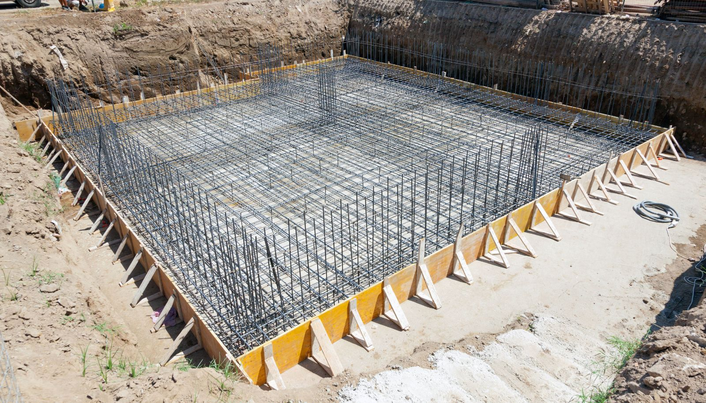
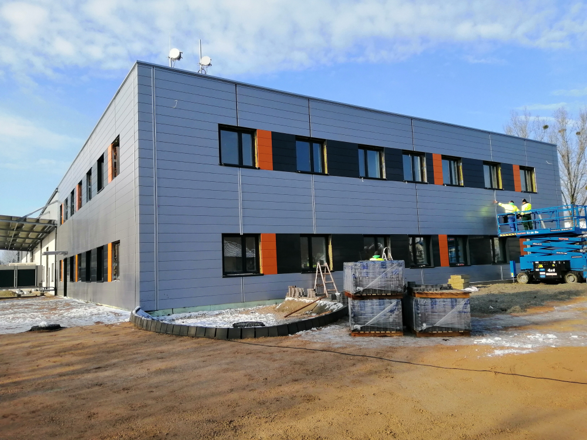

Korábbi munkáink
Tekintse meg néhány korábbi projektünket, amelyek során különböző betonozási munkákat végeztünk.

Családi ház alapozás – Budapest

Ipari csarnok betonozása – Győr
Garázs betonozás – Érd
Térbetonozás – Budapest